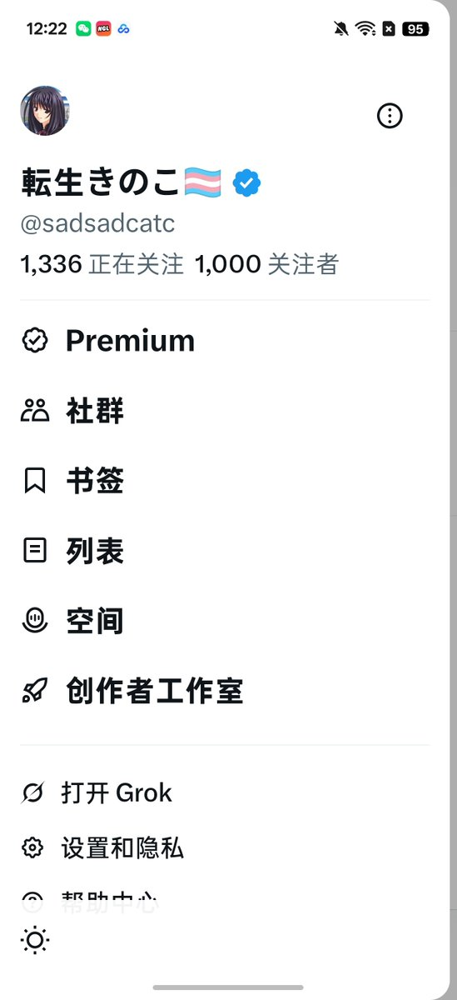

无敌的小白羽大人🍥
@yuerQwQ
RT @sadsadcatc: 千fo纪念抽奖
转发＋评论+点赞参与
非常感谢大家一路上的陪伴
纵使我是如此的无可救药
一等奖 60rmb *1
二等奖 20rmb *2
三等奖 10rmb *4
参与时间截止到8月底31号
9月份开奖
没有准备好礼物只好抽钱钱了orz ht…

転生きのこ🏳️⚧️
@sadsadcatc
千fo纪念抽奖
转发＋评论+点赞参与
非常感谢大家一路上的陪伴
纵使我是如此的无可救药
一等奖 60rmb *1
二等奖 20rmb *2
三等奖 10rmb *4
参与时间截止到8月底31号
9月份开奖
没有准备好礼物只好抽钱钱了orz https://t.co/37OAe1RHD2